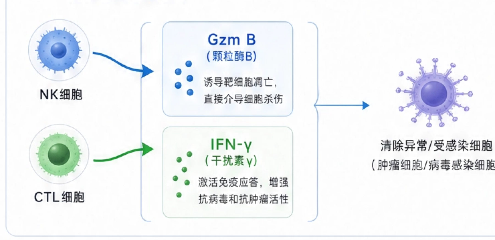

1NK/CTL细胞活性分析
基于Gzm B和IFN-γ数据，解读抗肿瘤、抗病毒及免疫平衡能力
指标解读
NK细胞和CTL细胞是机体重要的免疫效应细胞，能够识别并清除异常或受感染的细胞。
Gzm B（颗粒酶B）是直接介导靶细胞杀伤的关键杀伤分子；IFN-γ（干扰素γ）是重要的免疫调节因子，增强抗病毒和抗肿瘤免疫应答。
临床意义
抗肿瘤能力Gzm B水平反映细胞毒性活性，数值越高，清除肿瘤细胞的能力越强。
抗病毒能力IFN-γ水平反映抗病毒免疫应答强度，数值越高，抗病毒能力越强。
免疫平衡能力Gzm B与IFN-γ协同作用，维持免疫清除与免疫耐受的动态平衡。
指标作用机制图示

Gzm B
IFN-γ
提示：结果需结合年龄、感染史、肿瘤史及其他免疫指标综合判断。